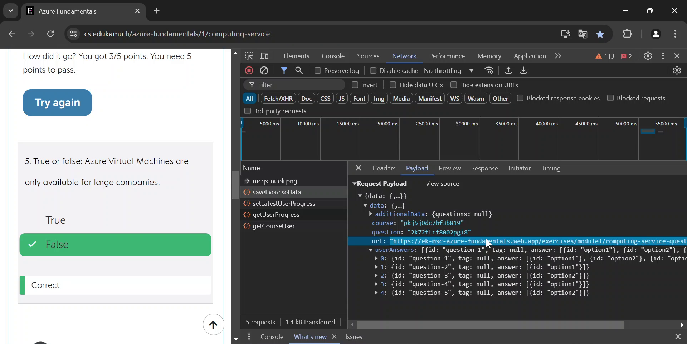

Edukamu exploit
Back in my bachelor studies, I took a course on Edukamu, and there was a multiple-choice questionnaire at the end of some chapters.
I had a hard time with one of the questions, so I got creative. I noticed that I could inspect the traffic to see what was sent to the server.

I noticed that a .yaml file was being sent, which contained the correct answers to the multiple-choice questionnaire.